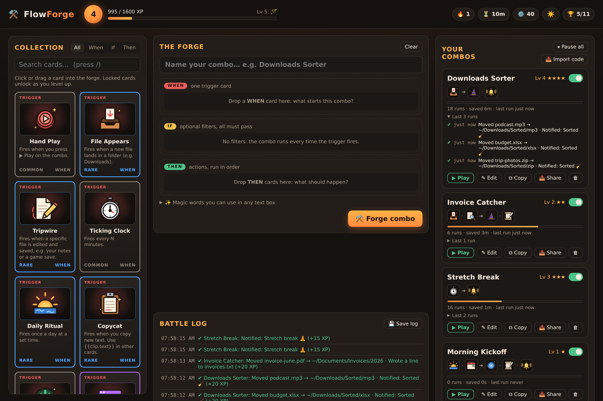
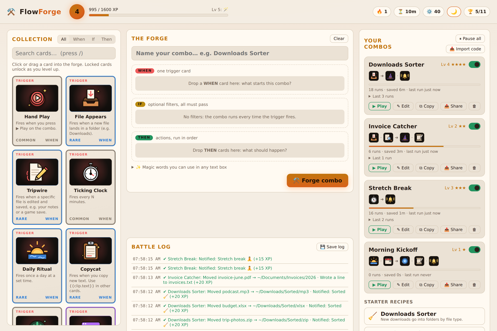
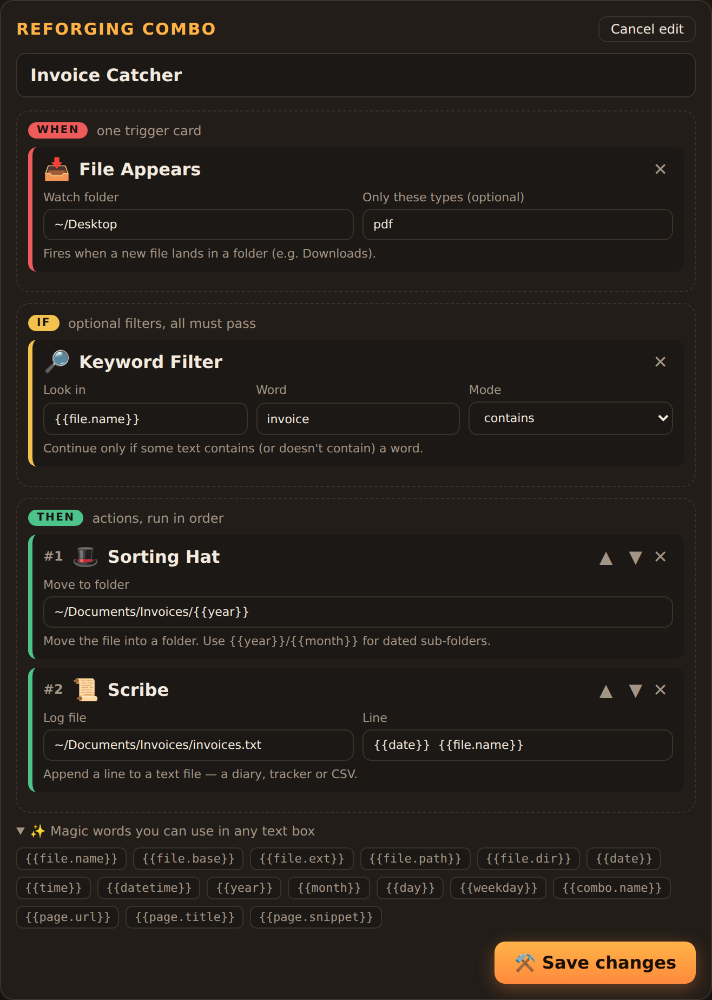

Snap WHEN, IF and THEN cards into combos that really run on your PC: sort downloads, file invoices, back up notes, ping Discord. Every run earns XP, and you unlock rarer cards as you level up.

Every automation is three kinds of card. Drag them into the forge, fill in a folder or two, press Forge, done.
A file lands in Downloads, you copy text, a file is saved, a web page changes, or it's 9 AM.
Only PDFs, only on weekdays, only if the name says "invoice", only files over 50 MB.
Move, rename, zip or copy the file, notify you, copy text, post to Discord, or run a command.
Automation software usually feels like filling in forms. FlowForge feels like building a deck.
Common to legendary, each with its own illustration. Epic cards glow and legendary ones shimmer.
Every successful run earns XP. Level up to unlock Web Watcher, Raven, Arcane Command and more.
Three daily quests for bonus XP, a daily streak to keep alive, and 13 achievements from First Forge to Grand Collector.
Turn any combo into an FF1-… code a friend can import. Secrets such as webhook URLs are left out.
Every combo keeps its last 5 runs, plus a Battle Log you can save as a text file.
Only listens on your own PC, never overwrites files, and has loop guards so a combo can't trigger itself forever.
Dark forge or light parchment: pick your theme.


FlowForge runs on your own computer. Nothing is uploaded anywhere.
FlowForge.bat (Windows), FlowForge.command (macOS) or run ./flowforge.sh (Linux).git clone https://github.com/Necromancervbh/Flowforge-.git
cd Flowforge-
npm start